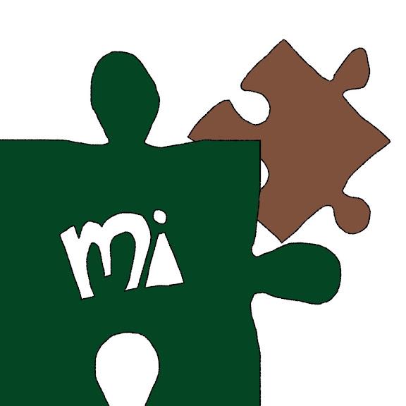

深緑 / Forest green
#044523RGB(4, 69, 35) · 手前のピース
A SMALL GUIDE TO COLOR CODES
深緑のピースと、茶色のピース。
この画像の色は、どんな数字で表せるでしょう。
身近な配色から、カラーコードの仕組みを紹介します。

画像内で多く使われているピクセルの値から、代表的な3色を取り出しました。
#044523RGB(4, 69, 35) · 手前のピース
#7E513CRGB(126, 81, 60) · 奥のピース
#FFFFFFRGB(255, 255, 255) · 背景と文字
※ JPEG画像には圧縮による微妙な色の違いがあります。上記は輪郭や細かな色差を除いた代表色です。
カラーコードは、色を数字や文字で指定するための表記です。Webでよく使われるHEX（16進数）では、#のあとに6桁を並べて色を表します。
2桁ずつ、赤（R）・緑（G）・青（B）の光の強さを指定します。各色は00〜FF。普段の10進数に直すと、0〜255になります。
深緑の#044523なら、赤は4、緑は69、青は35。緑の値がもっとも大きく、全体の値が低いため、暗い緑色になります。
16進数の並び：0〜9 → A・B・C・D・E・F#000000 は黒 ／ #FFFFFF は白
RGBは、同じ色を0〜255の数値で表す方法。スライダーで、光の混ざり方を確かめてみましょう。
rgb(4, 69, 35)